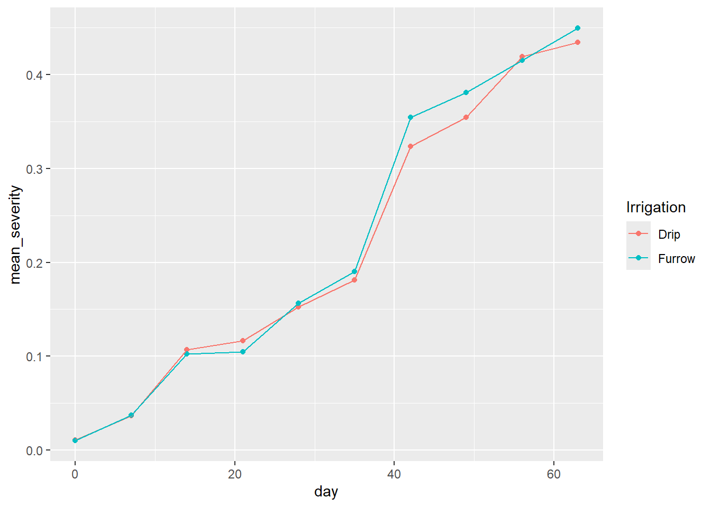
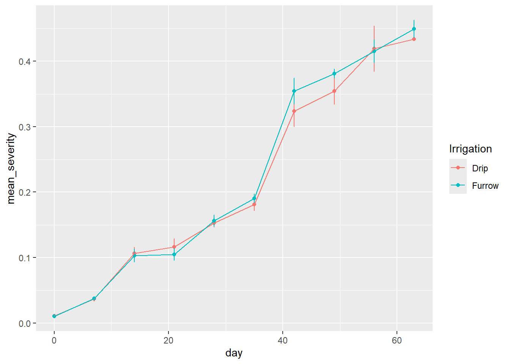
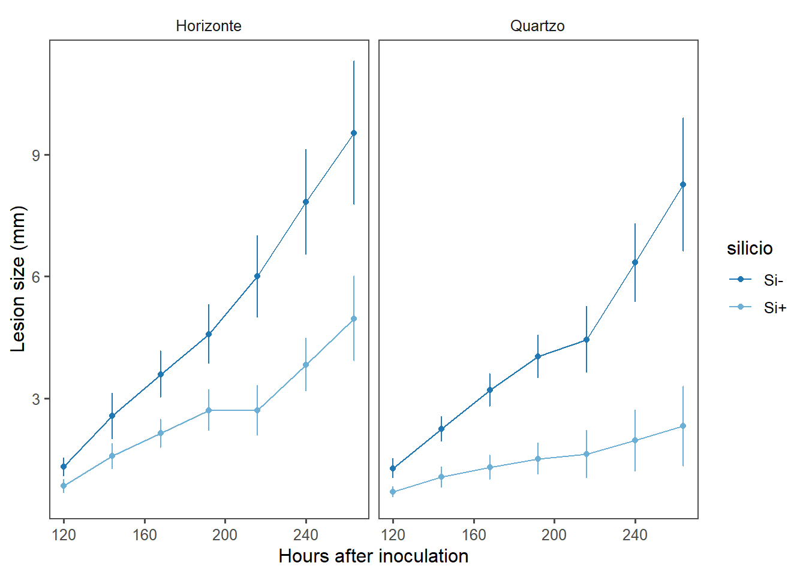
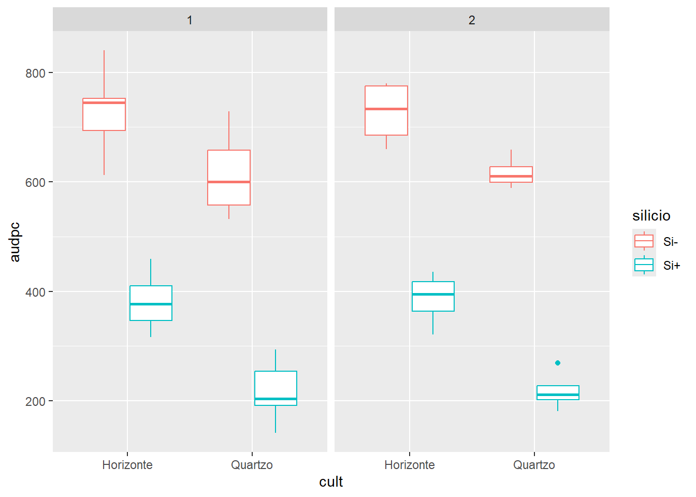
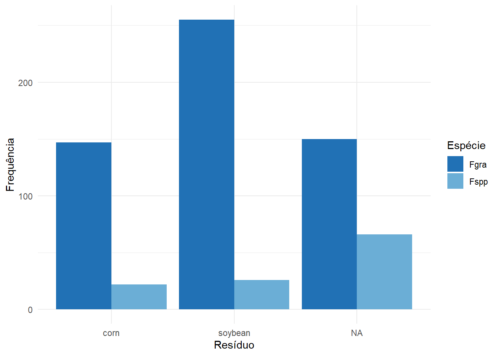

Comparação de Frequência
A comparação de frequência é uma análise usada para verificar se há associação ou diferença significativa entre categorias de variáveis categóricas (qualitativas). É muito comum em experimentos, questionários e dados de contagem.
A função tabyl() cria uma tabela de frequência tabular, mostrando a contagem de ocorrências de diferentes combinações de valores em variáveis categóricas.
year Fgra Fspp
2009 0.8490566 0.1509434
2010 0.8657407 0.1342593
2011 0.7567568 0.2432432Gráfico de barras - frequência
Frequência de classe
A função chisq.test() é utilizada para realizar testes do qui-quadrado em duas principais situações:
Testes de independência em tabelas de contingência — verifica se existe associação estatística entre duas variáveis categóricas;
Testes de aderência (ou qualidade de ajuste) — avalia se a distribuição observada de uma variável categórica difere significativamente de uma distribuição esperada (teórica).
Essa função retorna estatísticas como o valor do qui-quadrado, os graus de liberdade e o valor-p, que ajudam a determinar se as diferenças observadas são estatisticamente significativas.
Para frequências mais baixas
A função fisher.test() realiza o teste exato de Fisher, que é utilizado para avaliar a independência entre linhas e colunas em uma tabela de contingência, especialmente quando os valores esperados são baixos (frequências menores que 5), condição na qual o teste do qui-quadrado pode não ser confiável.
Esse teste verifica se há evidência de associação entre duas variáveis categóricas, assumindo que as margens da tabela (totais de linha e coluna) são fixas. Ele calcula exatamente a probabilidade de observar uma distribuição tão extrema quanto a observada, ou mais, sob a hipótese nula de independência.
Fisher's Exact Test for Count Data
data: q
p-value = 0.2118
alternative hypothesis: true odds ratio is not equal to 1
95 percent confidence interval:
0.357205 1.311411
sample estimates:
odds ratio
0.6819103
Pearson's Chi-squared test with Yates' continuity correction
data: q
X-squared = 2.6165, df = 1, p-value = 0.1058Cruzamento entre variáveis
Fgra Fspp
2009 225 40
2010 187 29
2011 140 45Code

Code

Code
One Sample t-test
data: curve3$Drip
t = 51.206, df = 2, p-value = 0.0003812
alternative hypothesis: true mean is not equal to 0
95 percent confidence interval:
12.26473 14.51493
sample estimates:
mean of x
13.38983 Exemplo:
Code
library(gsheet)
tw <- gsheet2tbl("https://docs.google.com/spreadsheets/d/1t5xftb0xSRPNFhM7h_MiPNtwt2UFUcm9/edit#gid=1594889893")
tw |>
group_by(cult,silicio,hai) |>
summarise (mean_lesion = mean (as.numeric(lesion_size)),
sd_lesion = sd(lesion_size)) |>
ggplot(aes(hai,mean_lesion, color = silicio))+
geom_line()+
geom_point()+
geom_errorbar(aes(ymin=mean_lesion - sd_lesion,
ymax = mean_lesion + sd_lesion),
width = 0.1)+
facet_wrap(~cult)+
labs (y = "Lesion size (mm)", x = "Hours after inoculation")+
ggthemes::theme_few()+
scale_color_manual(values = c("#1f78b4", "#6baed6", "#9ecae1", "#c6dbef"))
Análise da área abaixo da curva de progresso da doença - AUDPC
A AUDPC (Area Under the Disease Progress Curve) é uma medida utilizada na fitopatologia para quantificar e comparar o progresso de doenças em plantas ao longo do tempo. É calculada a partir de observações repetidas da severidade ou tamanho das lesões ao longo do tempo. Para isso, constrói-se uma curva com o tempo no eixo x e a variável de interesse (como o tamanho da lesão) no eixo y. Em seguida, calcula-se a área sob essa curva. Valores elevados de AUDPC refletem maior intensidade ou impacto da doença, enquanto valores mais baixos indicam menor progressão ou severidade.
Code

Teste ANOVA
Os resultados da análise de variância podem ajudar a identificar quais variáveis e interações têm efeito significativo na variável resposta audpc.
Df Sum Sq Mean Sq F value Pr(>F)
exp 1 0.1 0.1 0.033 0.85737
cult 1 135.0 135.0 74.615 2.67e-10 ***
silicio 1 839.4 839.4 464.034 < 2e-16 ***
exp:cult 1 0.0 0.0 0.000 0.99843
exp:silicio 1 0.0 0.0 0.002 0.96060
cult:silicio 1 19.3 19.3 10.671 0.00239 **
exp:cult:silicio 1 0.0 0.0 0.015 0.90324
Residuals 36 65.1 1.8
---
Signif. codes: 0 '***' 0.001 '**' 0.01 '*' 0.05 '.' 0.1 ' ' 1OK: residuals appear as normally distributed (p = 0.893).Exemplo
Code
Pearson's Chi-squared test with Yates' continuity correction
data: tab
X-squared = 1.1997, df = 1, p-value = 0.2734Code
